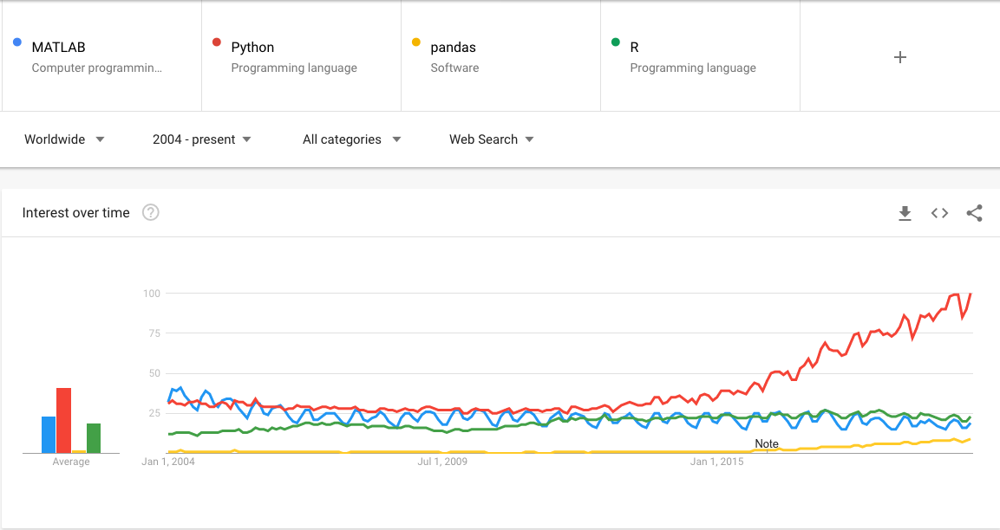
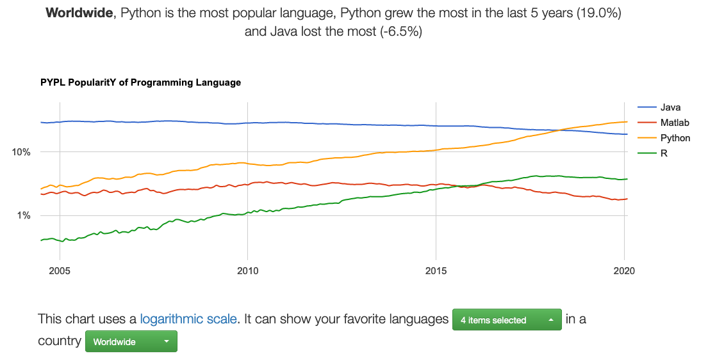
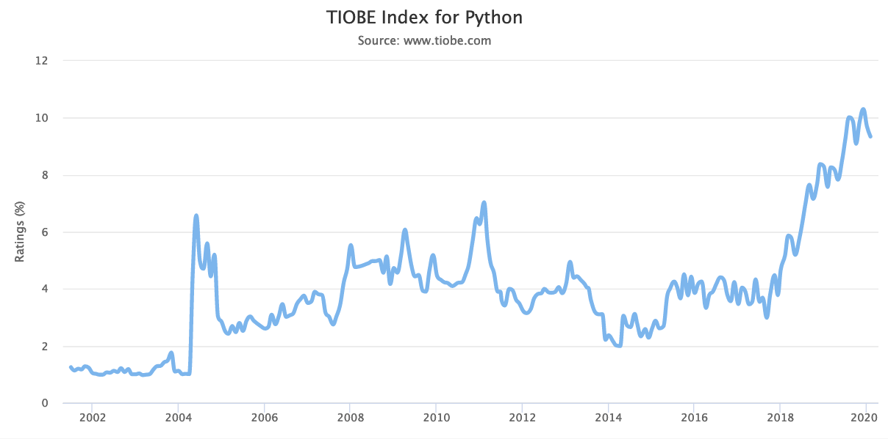

This page tracks the changes in popularity of the Matlab and Python programming languages.
One difficulty in comparing these languages is that Python is versatile, and has many uses outside science and data analysis. For example, it is widely used in web programming. However, it seems that recent growth in Python has been driven by its use in data analysis - see Why is Python growing so quickly. The following is a quote from that page:
These analyses suggest two conclusions. First, the fastest-growing use of Python is for data science, machine learning and academic research. This is particularly visible in the growth of the pandas package, which is the fastest-growing Python-related tag on the site. As for which industries are using Python, we found that it is more visited in a few industries, such as electronics, manufacturing, software, government, and especially universities. However, Python’s growth is spread pretty evenly across industries.
To get at different uses of Python, some of the metrics below include searches / uses of the Pandas data science library for Python. It seems reasonable to presume that people searching for the Pandas library, or asking questions about it, are some subset of those using Python for data analysis, rather than, say, web programming.
Some of the metrics below also include searches / questions about the R programming language. This is another baseline to capture another major player in data analysis.
Other metrics include values for Java. Java has been, and by some metrics, still is, the most popular programming language overall.
Google searches
Here are the Google trends data for Matlab, Python, Pandas and R:

Matlab searches are in very slow decline. Python searches started ticking up around 2011, and have been steadily increasing. From mid 2015 Python searches have been increasing at something like a linear rate of about 13% of peak per year. Searches for Pandas, the Python library, are at about half the rate for all searches for Matlab, the programming language, and are also growing quickly.
I previously combined the search term “data science” with Python and Matlab:

Matlab hardly registers in this search, compared to Python.
Redmonk Programming Language Rankings / Stack Overflow
See a previous post for an introduction to the Redmonk ratings.
| Year | Quarter | Python position | Matlab position |
|---|---|---|---|
| 2019 | 3 | 3 | 23 |
| 2019 | 1 | 3 | <20 |
| 2018 | 3 | 3 | <20 |
Some data for the Redmonk rankings come from Stack Overflow data. Here are the percentages of Stack Overflow questions on Python, Java, R, Matlab, and Pandas.

Here is a plot restricted to Matlab and Pandas, to show more detail:

Matlab appears to have gone into relative decline from around the middle of \2015, at about the same time that Pandas started its rapid ascent. There are now in the order of 10 times more questions about Pandas, the Python library, than there are about Matlab, the language.
Popularity of Programming Languages site
This graphic is a screen shot from the PopularitY of Programming Languages website:

Notice the logarithmic scale. Python recently replaced Java as the most popular language of any type. Matlab is in slow decline, with the rate of decline picking up around 2015. Python’s “share” on this graph is around 29.9%; Matlab’s share is more than ten times less at 1.8%.
Percentage of all Github pull requests
The Githut 2.0 site has the percentage of all Github pull requests that are in a particular language. This reflects open-source development activity. As of the fourth quarter of 2019, these values were:
- Python: 17.6% (2nd position overall, after JavaScript).
- R: 0.12% (31st position).
- Matlab: 0.06% (37th).
TIOBE language index
See the previous post for an introduction to the TIOBE index. The plots here from links to the various languages at https://www.tiobe.com/tiobe-index.



Notice the scales for these plots; the peak values for Python, Matlab and R are around 10%, 2% and 2.5% respectively, with Matlab and R peaking around 2017. Python appears to be on a steady upward trend from the beginning of 2018.
The positions of Python, Matlab and R in the Tiobe rankings are 3rd, 16th and 13th respectively, as of writing (February 2020).